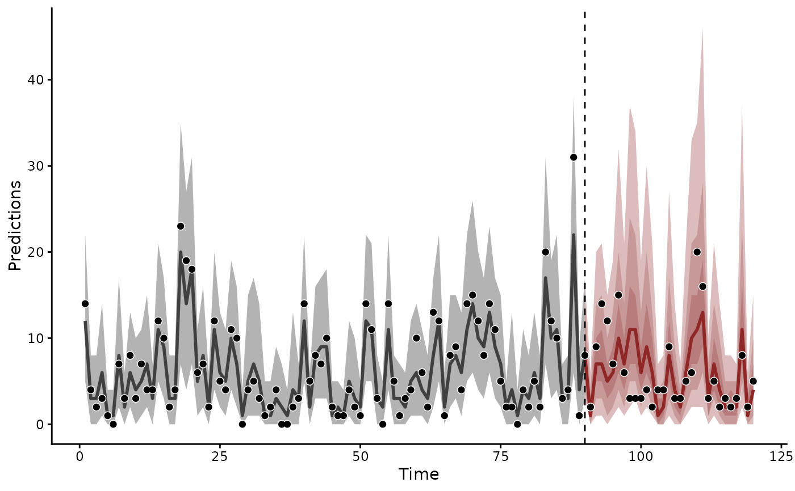

Weights for combining models evaluated by lfo_cv()
on one rolling-origin grid, for example in
ensemble.mvgam_forecast(). Yao et al. (2018) describe both
methods.
"pseudo-BMA": the softmax of each model's summed ELPD. A gap of more than about 10 ELPD units gives the better model nearly all the weight."stacking": weights that maximise the log score of the combined predictive over the held-out observations. They spread weight more evenly. Each result needs the pointwise matrix thatlfo_cv(save_log_lik = TRUE)stores.
Usage
# S3 method for class 'mvgam_lfo'
loo_model_weights(x, ..., method = "pseudo-BMA", model_names = NULL)Value
A named numeric vector of weights summing to 1, of class
"pseudobma_weights" or "stacking_weights".
References
Yao, Y., Vehtari, A., Simpson, D., Gelman, A. (2018). Using stacking to average Bayesian predictive distributions. Bayesian Analysis 13(3): 917-1003. doi:10.1214/17-BA1091
Examples
# \dontrun{
set.seed(2)
simdat <- sim_mvgam(family = poisson(), n_series = 1L,
n_timepoints = 120L, trend_model = AR())
# Two models of one count series: a smooth of x with and without
# an AR(1) trend
mod_gam <- mvgam(y ~ s(x), data = simdat$data_train,
family = poisson(), chains = 2, silent = 2)
#> Warning: 51 of 2000 (3.0%) transitions ended with a divergence.
#> See https://mc-stan.org/misc/warnings for details.
mod_ar <- mvgam(y ~ s(x), trend_formula = ~ AR(p = 1),
data = simdat$data_train, family = poisson(),
chains = 2, silent = 2)
#> Warning: 56 of 2000 (3.0%) transitions ended with a divergence.
#> See https://mc-stan.org/misc/warnings for details.
# }
# \dontrun{
# Each origin after t = 70 forecasts the next time step. The
# pointwise log densities feed stacking weights
lfo_gam <- lfo_cv(mod_gam, min_t = 70L, save_log_lik = TRUE)
#> Warning: 54 of 2000 (3.0%) transitions ended with a divergence.
#> See https://mc-stan.org/misc/warnings for details.
lfo_ar <- lfo_cv(mod_ar, min_t = 70L, save_log_lik = TRUE)
#> Warning: 49 of 2000 (2.0%) transitions ended with a divergence.
#> See https://mc-stan.org/misc/warnings for details.
#> Warning: 72 of 2000 (4.0%) transitions ended with a divergence.
#> See https://mc-stan.org/misc/warnings for details.
#> Warning: 92 of 2000 (5.0%) transitions ended with a divergence.
#> See https://mc-stan.org/misc/warnings for details.
# Pseudo-BMA weights come from the summed ELPDs
loo_model_weights(lfo_gam, lfo_ar, model_names = c("GAM", "AR"))
#> Method: pseudo-BMA
#> ------
#> weight
#> GAM 0.000
#> AR 1.000
# Stacking weights come from the pointwise log densities
w <- loo_model_weights(lfo_gam, lfo_ar, method = "stacking",
model_names = c("GAM", "AR"))
w
#> Method: stacking
#> ------
#> weight
#> GAM 0.156
#> AR 0.844
# The stacking weights combine the two forecasts
fc <- ensemble(forecast(mod_gam, newdata = simdat$data_test),
forecast(mod_ar, newdata = simdat$data_test),
weights = w)
plot(fc)

# }